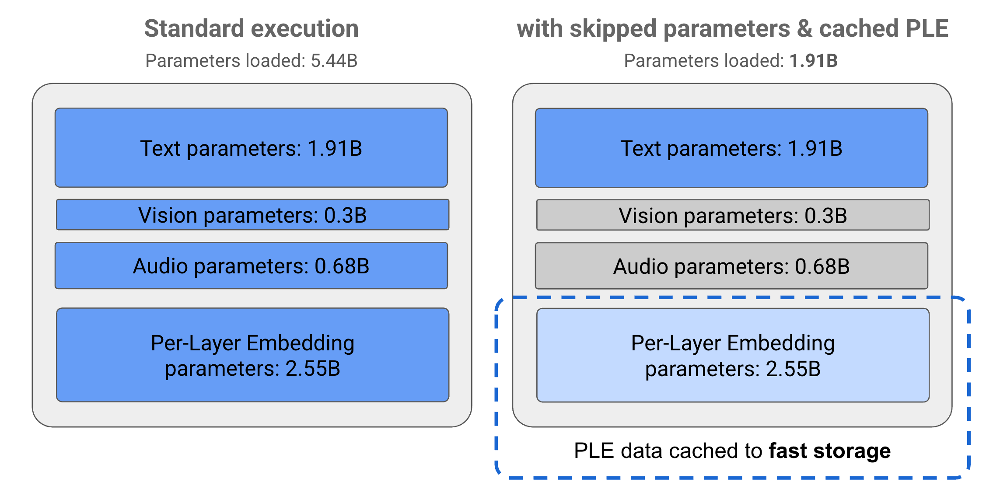
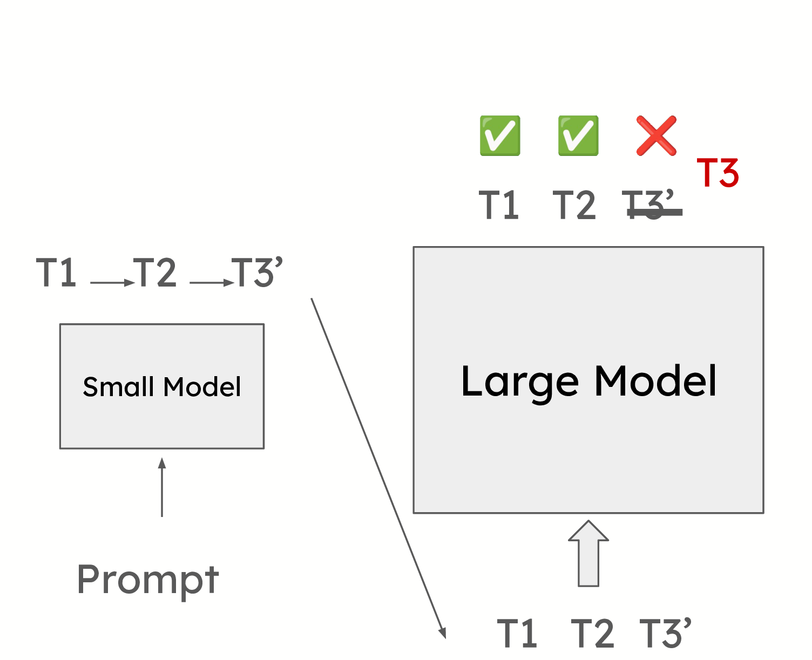
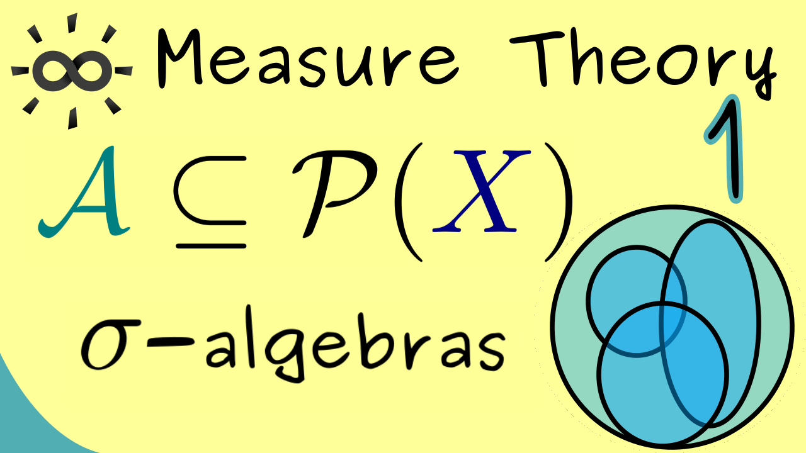

Ishaan’s Blog
Credentials
About Me
My Posts
ANSWER KEY TO PRIVILEGED BASIS AND RELU QUIZ
Here is the answer sheet - index.qmd
Prerequisite Study Guide: ReLU Privileged-Basis Reconstruction
The target object is
Ishaan Shrivastava
Multivariable Statistics
While trying to understand what a
privileged-basis
means, I realised that I am significantly underequipped with the prerequisites. These are my notes for all the problems I…
Ishaan Shrivastava
Jun 26, 2026

WTF is going on inside Gemma? Thoughts, and some experiments with hybrid post-pre-norm and Per-Layer-Embeddings (PLE)
Does anyone have any idea of what Gemma-style Per-Layer-Embeddings actually do? Lets pull up
Gemma 4 E4B
for a closer look.
Ishaan Shrivastava
Jun 23, 2026
Part-Whole training
Reference - https://www.sciencedirect.com/science/article/abs/pii/0001691889900073?via%3Dihub
Ishaan Shrivastava
May 24, 2026
Reproducing Attention is All you Need, from scratch - PyTorch
Transformers are a sequence modelling and transduction architecture heavily leveraging self-attention in order to eliminate the need for convolutions or gating. Advantages…
Ishaan Shrivastava
May 24, 2026
Rotating Emphasis Manipulation
Reference - https://www.sciencedirect.com/science/article/abs/pii/0001691889900073?via%3Dihub
Ishaan Shrivastava
May 24, 2026

speculative-decoding
def remove_last_t_from_kvcache(kvcache, t): for i, (k_layer, v_layer) in enumerate(kvcache): if k_layer is not None: kvcache[i] = ( k_layer[:, :, :-t, :], # remove last…
Ishaan Shrivastava
Nov 11, 2025

Measure Theory
A sigma algebra
\(\mathcal{A}\)
on a set
\(X\)
is a nonempty set of subsets of
\(X\)
that is closed under complement, countable union, and countable intersection. In other…
Ishaan Shrivastava
Jan 30, 2025
No matching items